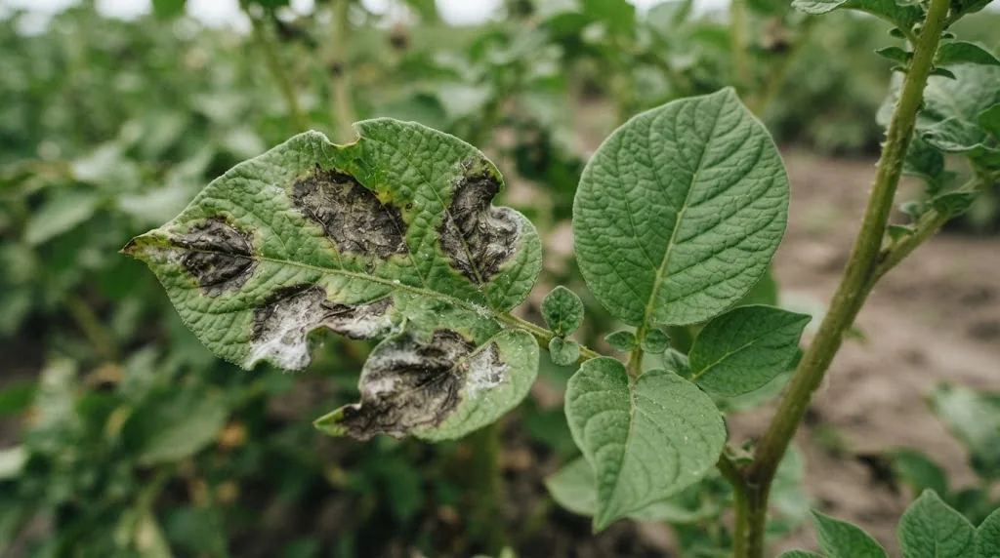

Коротко
- Картоплю на одному місці садять не частіше разу на 4 роки. Кращі попередники: озимі зернові, багаторічні трави, люпин, льон, ріпак.
- Парша розвивається у ґрунті в широкому діапазоні pH (приблизно 5,2–8,0), тому її запобігають, а не лікують.
- Рак картоплі карантинна хвороба: при підозрі зверніться до територіального органу Держпродспоживслужби і нічого не робіть самостійно.
- Бадилля з ознаками фітофторозу краще прибрати з поля.
Як не допустити хвороб: профілактика
Усі хвороби картоплі легше запобігти, ніж лікувати. Базовий набір дій такий:
- садіть стійкі до місцевих хвороб сорти й здоровий насіннєвий матеріал;
- дотримуйтеся сівозміни: картопля на тому ж полі не частіше разу на 4 роки;
- обирайте правильних попередників: озимі зернові, багаторічні трави (1–2 роки), суміші злаків з бобовими, ріпак, редька, люпин, льон, кукурудза;
- регулярно оглядайте кущі, жовтіння листя й уповільнений ріст перший сигнал;
- вилучайте й знищуйте хворі рослини та бульби, щоб хвороба не поширилася.
Фітофтороз

Хвороба пасльонових (картопля, томати, перець, баклажани), яку спричиняє гриб-подібний організм Phytophthora infestans. Вона розвивається у вологу прохолодну погоду й може знищити ботву за кілька днів.
У дослідженнях на Поліссі пік розвитку хвороби припадав на цвітіння, а ранні й ранньо-середні сорти уражувалися слабше (28–44%), ніж середньостиглі й середньопізні (54–69%). Хворі бульби заражають здорові під час зберігання.
Що допомагає: стійкі й ранні сорти, сівозміна, здоровий насіннєвий матеріал, полив без перезволоження, розумна густота посадки й профілактичні біопрепарати. Bacillus subtilis у складі добрива GREENODIN пригнічує розвиток хвороби.
Парша
Хвороба, що вражає бульби, корені та підземну частину стебла. Заражена картопля втрачає до 30% крохмалю, її смак погіршується, а термін зберігання скорочується. Парша розвивається у ґрунті: за даними NDSU Extension, найбільш сприятливий для зараження pH становить приблизно 5,2–8,0. Повністю контролювати хворобу відомих способів немає, тому її запобігають, а не лікують.
Виділяють чотири види: звичайна, порошиста, сріблиста й чорна (ризоктоніоз). Що допомагає:
- відбирайте здоровий посадковий матеріал;
- зберігайте насіннєві бульби в холодному, сухому місці, що добре провітрюється, без конденсату;
- вирощуйте стійкі сорти, хоча абсолютно стійких не буває;
- пророщуйте бульби на світлі перед посадкою;
- дотримуйтеся сівозміни;
- підтримуйте вологість ґрунту в період формування бульб: за даними NDSU, при 80–85% вологості парша розвивається слабше, ніж при 65–70%;
- розглядайте сидерати в сівозміні (гречка, ріпак, овес, жито, просо): їх відносять до культур, що пригнічують збудника;
- не вапнуйте картопляну ділянку без потреби, а лужний ґрунт підкислюйте, наприклад, GREENODIN BROWN.
Про зв’язок парші з кислотністю читайте в статті про оптимальний pH для культур.
Фузаріоз
Грибкова хвороба, яка призводить до в’янення рослин і гниття бульб при зберіганні. Захист складається з тих самих заходів: здоровий матеріал, сівозміна, дренаж. Біологічні препарати проти фузаріозу підбирайте з агрономом і застосовуйте за інструкцією виробника.
Рак картоплі
Увага: це карантинна хвороба, і діяти треба за правилами. Збудник Synchytrium endobioticum живе в ґрунті, уражує бульби й столони, рідше стебла та листя. На бульбах з’являються бородавчасті нарости, які з часом нагадують цвітну капусту. Уражені бульби деформуються й гниють.
Якщо знайшли підозрілі бульби, негайно зверніться до територіального органу Держпродспоживслужби у вашій області. Самостійно хворобу не лікують: помилкові дії можуть поширити її. За рекомендацією служби, уражені бульби й рослинні рештки спалюють, а не залишають на полі чи в компості. Сирі хворі бульби не дають худобі, бо спори переживають травлення. Якщо збудник виявлено на полі, продукція з нього стає непридатною для реалізації, а ділянка надовго лишається непридатною для картоплі та інших культур.
Догляд за ґрунтом після збирання
Копання порушує верхній родючий шар, тому ґрунт після картоплі варто відновити. Рекомендуємо внести 150 кг/га (15 г/м²) GREENODIN з урахуванням кислотності ґрунту. Бактерії у складі добрива розкладають рослинні залишки, і ґрунт збагачується гумусом.
З бадиллям є дві позиції. Класична агрономія радить прибирати його з поля, бо спори фітофторозу поширюються вітром і дощем. У системі GREENODIN бадилля можна залишати: воно стає органікою для корисних бактерій. Практична порада: якщо на ділянці були ознаки хвороб, бадилля краще прибрати. Якщо рослини були здорові, можна залишити, але перший сезон порівняйте з контролем.
Часті запитання
Як відрізнити фітофтороз від звичайного підсихання листя?
Фітофтороз починається з темних водянистих плям на листі, на нижньому боці яких у вологу погоду видно білуватий наліт. Плями швидко темніють і розростаються, а потім уражуються стебла та бульби.
Що робити, якщо картопля заражена раком?
Негайно зверніться до територіального органу Держпродспоживслужби у вашій області і не вживайте заходів самостійно, бо помилкові дії можуть поширити хворобу. Уражені бульби й рослинні рештки спалюють, не залишають на полі чи в компості. Сирі хворі бульби не дають худобі: спори переживають травлення, тому використовувати їх можна лише після термічної обробки.
Чи правда, що парша знижує якість картоплі?
Так. Уражена картопля втрачає до 30% крохмалю, гірше зберігається і має гірший смак.
Чи можна залишати бадилля після збирання?
Класична агрономія радить прибирати бадилля, щоб не поширювати фітофтороз. Завдяки Bacillus subtilis у складі добрива GREENODIN бадилля можна залишати як органіку. Якщо на ділянці були хвороби, краще прибрати.

Директор НВ ТОВ «СІНТА», розробник органічних добрив ТМ GREENODIN.
Опубліковано 12 жовтня 2026. Оновлено 12 жовтня 2026.
Джерела
- Рак картоплі: небезпечне карантинне захворювання, що загрожує агровиробництву. Держпродспоживслужба
- Common scab. NDSU Extension (США)
- Федорчук С. В. Оптимізація захисту картоплі від збудників Phytophthora infestans та Alternaria solani в умовах Полісся України. Автореферат дис., НУБіП України, Київ, 2018